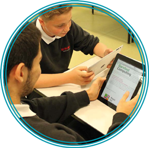

UsOnline provides KS3 activities for pupils that engage them on real world contexts of using online technology safely and responsibly
LGfL Cyberpass offer a range of esafety activities and testing tools to identify your own good practice and develop targeted learning
Meme provides KS3/4 activities for pupils that engage them on real world contexts of using online technology safely and responsibly
Who Can Play (designed for KS2 but relevant and adaptable) discusses the safe use of gaming devices and in particular the legislation regards games certification
Secondary Esafety Matrix provides links and resources for teachers when planning teaching activities regards esafety and safe online use.
Digizen provides resources and materials particularly regards cyberbullying and online behaviours in the real world
Thinkuknow provides resources and materials particularly regards stranger danger and online behaviours in the real world
PEGI (Pan European Game Information) is a cross country set of legislation that identifies gaming certification and provides support for teachers and parents
Digital Literacy scheme of work developed in conjunction with SWGFL that covers all areas of online life for teenagers in real life and relevant ways
Secondary Esafety Matrix provides links and resources for teachers when planning teaching activities regards esafety and safe online use.
LGfL Cyberpass offer a range of esafety activities and testing tools to identify your own good practice and develop targeted learning
Secondary Esafety Matrix provides links and resources for teachers when planning teaching activities regards esafety and safe online use.
LGfL Cyberpass offer a range of esafety activities and testing tools to identify your own good practice and develop targeted learning
Sexting
Secondary Esafety Matrix provides links and resources for teachers when planning teaching activities regards esafety and safe online use.
LGfL Cyberpass offer a range of esafety activities and testing tools to identify your own good practice and develop targeted learning
Grooming
Secondary Esafety Matrix provides links and resources for teachers when planning teaching activities regards esafety and safe online use.
LGfL Cyberpass offer a range of esafety activities and testing tools to identify your own good practice and develop targeted learning
Digital Literacy scheme of work developed in conjunction with SWGFL that covers all areas of online life for teenagers in real life and relevant ways
Thinkuknow provides resources and materials particularly regards stranger danger and online behaviours in the real world
Cyberbullying
Thinkuknow provides resources and materials particularly regards stranger danger and online behaviours in the real world
LGfL Cyberpass offer a range of esafety activities and testing tools to identify your own good practice and develop targeted learning
CEOP (Child Exploitation and Online Protection agency) is the key agency for reporting online issues and concerns
Lets Fight It Together- excellent cyberbullying video resources and lesson plans
Secondary Esafety Matrix provides links and resources for teachers when planning teaching activities regards esafety and safe online use.
Digital Literacy scheme of work developed in conjunction with SWGFL that covers all areas of online life for teenagers in real life and relevant ways
Laugh and your part of it- cyberbullying video resources and lesson plans and focusing on the wider impact of cyberbullying and other people joining in.
Safety
Understand a range of ways to use technology safely, respectfully, responsibly and securely, including protecting their online identity and privacy; recognise inappropriate content, contact and conduct and know how to report concerns 
People are living more of their lives online. Pupils need to be aware of the dangers that exist on the Internet from their own personal conduct, from contact with other people, and from their access to different types of content. They need to be aware of their legal and ethical responsibilities, especially regarding their conduct towards others and their respect of intellectual property rights.
Pupils should be aware of their online identity and take steps to protect it. They should understand what strong passwords are and how they are used to protect their computers and online data from threats. Pupils should also be aware of dangers such as trojans and viruses, and of the increased risk when using pirated software. They should understand the importance of keeping their computers and software up to date, and of using tools such as virus scanners. 
Pupils should understand what constitutes safe practice when accessing websites and opening email attachments. They should be familiar with secure websites that use https; this might be a good opportunity to teach basic cryptography such as the Caesar cipher.
A digital footprint is the data that is stored about a person?s online activities. It can include information that people have willingly uploaded or that others have recorded about them without their knowledge. All this data may be available to people, such as future employers, and pupils should consider taking steps to limit access to their personal data.
Dangers such as sexting, grooming and cyberbullying may affect pupils in your school, and parents are often ill-prepared to deal with these threats. Pupils may report concerns about their digital activity to you. Make them aware of the support available through CEOP and ChildLine. There is further information for you, pupils and parents/carers on the Thinkuknow website).
The overall aim is that pupils become responsible and resilient users of technology, able to make confident and safe use of the web and of other Internet-based services, and able to detect and deal with issues when they arise.
